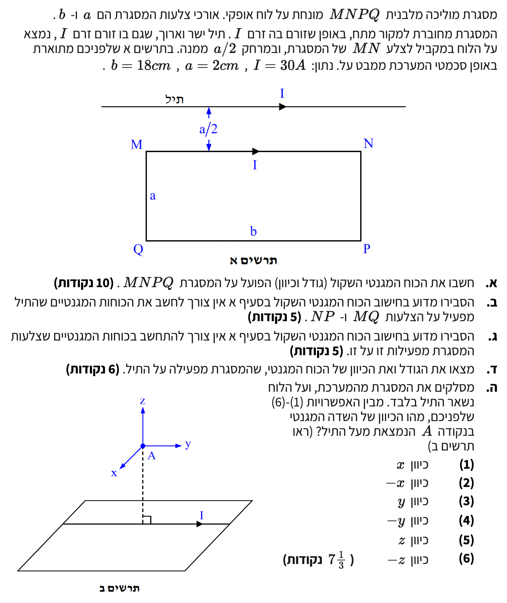

פתרון בגרות בפיזיקה - חשמל ומגנטיות
שאלה 4 - בגרות 2006 (תשס"ו)
ניתוח כוחות מגנטיים בין תיל ומסגרת - פתרון מודרך וצעד-אחר-צעד
עודכן:
--- --:--:--

[תמונת השאלה המקורית]
לא נמצאה תמונה בשם question-image.png באותה תיקייה.
ריכוז נתונים כלליים וניתוח פיזיקלי ראשוני
לפנינו תיל ישר ארוך מאוד ומסגרת מוליכה מלבנית \(MNPQ\) המונחים על שולחן אופקי. בתיל ובמסגרת זורם זרם קבוע שגודלו \(I = 30\text{ A}\).
נתוני המימדים והמרות יחידות:
- אורך הצלעות הארוכות של המסגרת (\(MN\) ו-\(QP\)): \(b = 18\text{ cm} = 0.18\text{ m}\)
- אורך הצלעות הקצרות של המסגרת (\(MQ\) ו-\(NP\)): \(a = 2\text{ cm} = 0.02\text{ m}\)
- המרחק בין התיל לצלע העליונה \(MN\): \(d_{MN} = \frac{a}{2} = 1\text{ cm} = 0.01\text{ m}\)
- המרחק בין התיל לצלע התחתונה \(QP\): \(d_{QP} = \frac{a}{2} + a = 1.5a = 3\text{ cm} = 0.03\text{ m}\)
עקרונות מפתח:
- תיל נושא זרם יוצר סביבו שדה מגנטי במרחב לפי חוק ביו-סבר.
- הכוח המגנטי הפועל על תיל ישר בשדה מגנטי אחיד (או קטע תיל בשדה) מחושב לפי כוח אמפר.
- כיוון השדה נקבע לפי כלל יד ימין הראשון, וכיוון הכוח לפי כלל יד ימין השני.
מה נתון: הזרם בתיל ובמסגרת: \(I = 30\text{ A}\). אורך הצלעות המקבילות לתיל: \(b = 0.18\text{ m}\). המרחק של צלע \(MN\) מהתיל: \(d_{MN} = 0.01\text{ m}\). המרחק של צלע \(QP\) מהתיל: \(d_{QP} = 0.03\text{ m}\). קבוע חלחלות הריק: \(\mu_0 = 4\pi \times 10^{-7}\text{ T}\cdot\text{m/A}\).
מה מחפשים: את הגודל והכיוון של הכוח המגנטי השקול \(F_{\text{net}}\) הפועל על המסגרת המלבנית \(MNPQ\).
נוסחאות ועקרונות בשימוש:
\(\frac{F}{\ell} = \frac{\mu_0 I_1 I_2}{2\pi d}\)
עקרון פיזיקלי: שני תילים מקבילים נושאי זרם מפעילים זה על זה כוח מגנטי. כאשר הזרמים באותו כיוון - התילים מושכים זה את זה. כאשר הזרמים בכיוונים מנוגדים - התילים דוחים זה את זה.
חישוב הכוחות על הצלעות המקבילות:
התייחסות לצלעות האנכיות (\(MQ\) ו-\(NP\)): על אף שפועלים כוחות מגנטיים על צלעות אלו, הם שווים בגודלם ומנוגדים בכיוונם (עקב סימטריה ומרחקים זהים מהתיל באותן נקודות), ולכן סכומם הכולל הוא אפס. מכאן שהכוח השקול על המסגרת יורכב אך ורק מהכוחות על הצלעות המקבילות לתיל. (הסבר מורחב לכך מופיע בסעיף ב').
1. חישוב הכוח על צלע \(MN\) (\(F_{MN}\)): הזרם בצלע \(MN\) זורם ימינה (מאותו כיוון של הזרם בתיל המקורי). לפיכך, קיים כוח משיכה מגנטי הפונה כלפי מעלה (לכיוון התיל). מתוך דף הנוסחאות, נבודד את הכוח ונבצע פיתוח אנכי שלבי ברור:
\[
\begin{aligned}
\frac{F}{\ell} &= \frac{\mu_0 I_1 I_2}{2\pi d} \\
F &= \frac{\mu_0 I_1 I_2 \ell}{2\pi d} \\
F_{MN} &= \frac{\mu_0 \cdot I \cdot I \cdot b}{2\pi \cdot d_{MN}} \\
F_{MN} &= \frac{(4\pi \times 10^{-7}) \cdot 30 \cdot 30 \cdot 0.18}{2\pi \cdot 0.01} \\
F_{MN} &= \frac{2 \times 10^{-7} \cdot 900 \cdot 0.18}{0.01} \\
F_{MN} &= \frac{2 \times 10^{-7} \cdot 162}{0.01} \\
F_{MN} &= 3.24 \times 10^{-3} \text{ N}
\end{aligned}
\]
2. חישוב הכוח על צלע \(QP\) (\(F_{QP}\)): הזרם בצלע \(QP\) זורם שמאלה (בכיוון מנוגד לזרם בתיל). לפיכך, קיים כוח דחייה מגנטי הפונה כלפי מטה (הרחק מהתיל). נחשב זאת באופן שלבי אנכי:
\[
\begin{aligned}
F_{QP} &= \frac{\mu_0 \cdot I \cdot I \cdot b}{2\pi \cdot d_{QP}} \\
F_{QP} &= \frac{(4\pi \times 10^{-7}) \cdot 30 \cdot 30 \cdot 0.18}{2\pi \cdot 0.03} \\
F_{QP} &= \frac{2 \times 10^{-7} \cdot 900 \cdot 0.18}{0.03} \\
F_{QP} &= \frac{2 \times 10^{-7} \cdot 162}{0.03} \\
F_{QP} &= 1.08 \times 10^{-3} \text{ N}
\end{aligned}
\]
3. חישוב הכוח השקול (\(F_{\text{net}}\)): מאחר ושני הכוחות פועלים לאורך אותו ציר ובכיוונים מנוגדים, השקול יהיה הפרשם (הכיוון ייקבע על ידי הכוח הגדול יותר, כלומר \(F_{MN}\)):
\[
\begin{aligned}
F_{\text{net}} &= F_{MN} - F_{QP} \\
F_{\text{net}} &= 3.24 \times 10^{-3}\text{ N} - 1.08 \times 10^{-3}\text{ N} \\
F_{\text{net}} &= 2.16 \times 10^{-3}\text{ N}
\end{aligned}
\]
תשובה סופית: גודל הכוח המגנטי השקול הפועל על המסגרת הוא \(2.16 \times 10^{-3}\text{ N}\) וכיוונו הוא כלפי מעלה (בכיוון התיל המקביל).
💡 טיפ מורה:
שימו לב שהמרחק של כל אחת מהצלעות נמדד מקו התיל הישר עצמו! טעות נפוצה היא להציב את רוחב הלולאה \(a\) בתור המרחק עבור צלע \(QP\) במקום המרחק המלא מהתיל שהוא \(1.5a\). תמיד ציירו קווי עזר של מרחקים כדי לא ליפול במלכודת הזו.
מה נתון: הצלעות \(MQ\) ו-\(NP\) ניצבות לתיל המוליך הארוך. הזרמים בהן זורמים בכיוונים מנוגדים (ב-\(NP\) הזרם זורם "למטה" וב-\(MQ\) הזרם זורם "למעלה").
מה מחפשים: הסבר פיזיקלי מנומק לכך שהשפעתן של צלעות אלו על הכוח השקול מתבטלת לחלוטין.
נוסחאות ועקרונות בשימוש:
סימטריה מרחבית
כלל יד ימין השני (כיוון הכוח המגנטי)
ניתוח פיזיקלי:
השדה המגנטי שמייצר התיל הארוך בכל נקודה במרחב תלוי אך ורק במרחק המאונך מהתיל (\(r\)).
נביט על שתי הצלעות המאונכות \(MQ\) ו-\(NP\): עבור כל קטע קטן באורך \(\Delta x\) בצלע \(MQ\) הנמצא במרחק \(r\) מהתיל, קיים קטע קטן זהה באורך \(\Delta x\) בצלע \(NP\) הנמצא בדיוק באותו מרחק \(r\) מהתיל. מאחר שהמרחק מהתיל זהה, עוצמת השדה המגנטי וכיוונו שווים בשני הקטעים הללו. הזרם העובר בקטעים שווה בגודלו אך זורם בכיוונים מנוגדים.
לפי כלל יד ימין השני, הכוח המגנטי הפועל על שני הקטעים המקבילים הללו יהיה שווה בגודלו אך מנוגד בכיוונו (אחד פועל ימינה והשני שמאלה). כוחות אלו מקזזים ומבטלים זה את זה באופן מלא בכל נקודה לאורך הצלעות.
תשובה סופית: בגלל סימטריית המערכת, הכוחות המגנטיים הפועלים על הצלעות הצדדיות \(MQ\) ו-\(NP\) שווים בגודלם ומנוגדים בכיוונם בכל נקודה, ולכן סכומם הוקטורי הוא אפס ואין צורך לחשבם.
💡 טיפ מורה:
השתדלו תמיד להשתמש במושג "סימטריה" ובתיאור של "אינטגרציה אינטואיטיבית" (חלוקה לאלמנטים קטנים במרחקים זהים). בוחני הבגרות אוהבים מאוד לראות ניסוחים קפדניים שמראים הבנה עמוקה.
מה נתון: המסגרת היא גוף קשיח אחד המורכב מארבע הצלעות המחוברות ביניהן.
מה מחפשים: הסבר פיזיקלי מדוע כוחות מגנטיים פנימיים בתוך המסגרת אינם משפיעים על תנועתה או הכוח השקול החיצוני עליה.
נוסחאות ועקרונות בשימוש:
החוק השלישי של ניוטון (פעולה ותגובה)
ניתוח מערכת וגוף קשיח:
הכוחות המגנטיים שהצלעות של המסגרת מפעילות זו על זו הם כוחות פנימיים בתוך המערכת (המסגרת המוליכה). על פי החוק השלישי של ניוטון, כל כוח שמפעילה צלע אחת על צלע שנייה מלווה בכוח שווה בגודלו ומנוגד בכיוונו שמפעילה הצלע השנייה על הראשונה.
כאשר אנו מחשבים את הכוח השקול על המערכת כולה כגוף אחד, סכום כל הכוחות הפנימיים מתבטל לחלוטין. רק כוחות חיצוניים למערכת (כמו השדה המגנטי שמפעיל התיל החיצוני) יכולים להביא לכוח שקול שאינו אפס.
תשובה סופית: הכוחות שצלעות המסגרת מפעילות זו על זו הם כוחות פנימיים. על פי החוק השלישי של ניוטון, כוחות אלו פועלים בזוגות שווים ומנוגדים, ולכן סכומם השקול על המערכת כגוף אחד הוא 0.
💡 טיפ מורה:
עקרון זה נכון לכל סוגי הכוחות בטבע (מגנטיים, חשמליים, אלסטיים, כבידתיים). תמיד כשמבקשים מכם להתייחס לכוחות בתוך גוף קשיח יחיד, זכרו שחוקי ניוטון היסודיים שלמדתם במכניקה תקפים לחלוטין גם באלקטרומגנטיות.
מה נתון: הכוח השקול שהתיל מפעיל על המסגרת: \(2.16 \times 10^{-3}\text{ N}\) (כלפי מעלה).
מה מחפשים: גודלו וכיוונו של הכוח שמפעילה המסגרת בחזרה על התיל (\(\vec{F}_{\text{frame on wire}}\)).
נוסחאות ועקרונות בשימוש:
החוק השלישי של ניוטון (פעולה ותגובה בין גופים)
פתרון צעד-אחר-צעד:
על פי החוק השלישי של ניוטון, מתקיים קשר וקטורי ישיר בין כוח פעולה לתגובה בין שני גופים שונים במרחב:
\[ \vec{F}_{\text{frame on wire}} = -\vec{F}_{\text{wire on frame}} \]
הכוח שהתיל מפעיל על המסגרת הוא כלפי מעלה (לכיוון התיל), לכן הכוח שהמסגרת מפעילה על התיל יהיה שווה בגודלו אך מנוגד בכיוונו, כלומר כלפי מטה (לכיוון המסגרת).
תשובה סופית: הכוח שהמסגרת מפעילה על התיל הוא בגודל \(2.16 \times 10^{-3}\text{ N}\) וכיוונו הוא כלפי מטה (לכיוון המסגרת).
💡 טיפ מורה:
חלק מהתלמידים מנסים לפתור סעיף זה על ידי חישוב מורכב של השדות המגנטיים שמייצרות ארבע צלעות המסגרת על התיל, ואינטגרלים של כוחות. זו דרך ארוכה ומועדת לשגיאות. זיהוי פשוט של חוק שלישי של ניוטון חוסך זמן יקר ומקבל ניקוד מלא בבגרות.
מה נתון: מערכת צירים תלת-ממדית. ציר \(z\) פונה אנכית מעלה, ציר \(y\) פונה ימינה (מקביל לתיל), ציר \(x\) פונה באלכסון קדימה-שמאלה. הזרם בתיל זורם ימינה (בכיוון \(+y\)). הנקודה \(A\) נמצאת אנכית מעל התיל (בכיוון \(+z\)).
מה מחפשים: כיוון השדה המגנטי המדויק בנקודה \(A\) מתוך האפשרויות: (1) כיוון \(x\), (2) כיוון \(-x\), (3) כיוון \(y\), (4) כיוון \(-y\), (5) כיוון \(z\), (6) כיוון \(-z\).
נוסחאות ועקרונות בשימוש:
כלל יד ימין הראשון
שימוש בכלל יד ימין:
נכוון את אגודל יד ימין לכיוון זרימת הזרם בתיל - כלומר ימינה (בכיוון ציר \(+y\)). מעל התיל (בגובה הנקודה \(A\)), אצבעות הימין פונות החוצה, קדימה אלינו.
מכיוון שציר \(x\) החיובי פונה לכיוון הצופה (באותו כיוון של השדה המגנטי בנקודה \(A\) מעל התיל), נקבל שכיוון השדה הוא בכיוון \(x\).
תשובה סופית: כיוון השדה המגנטי בנקודה \(A\) הוא בכיוון ציר \(x\) החיובי (אפשרות מס' 1).
💡 טיפ מורה:
הקושי המרכזי בסעיף זה הוא התרגום ממערכת תלת-ממדית על הנייר. זכרו תמיד לעשות הדמיה פיזית עם העיפרון שלכם בתור התיל ויד ימין במהלך המבחן.